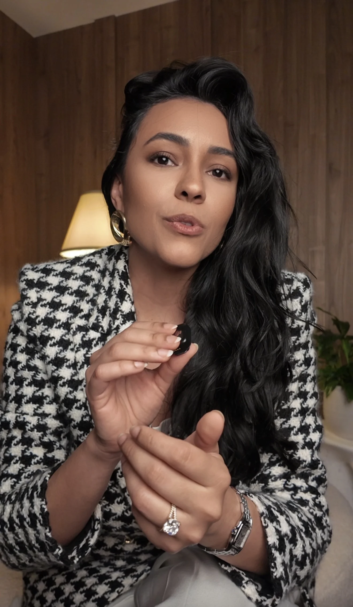
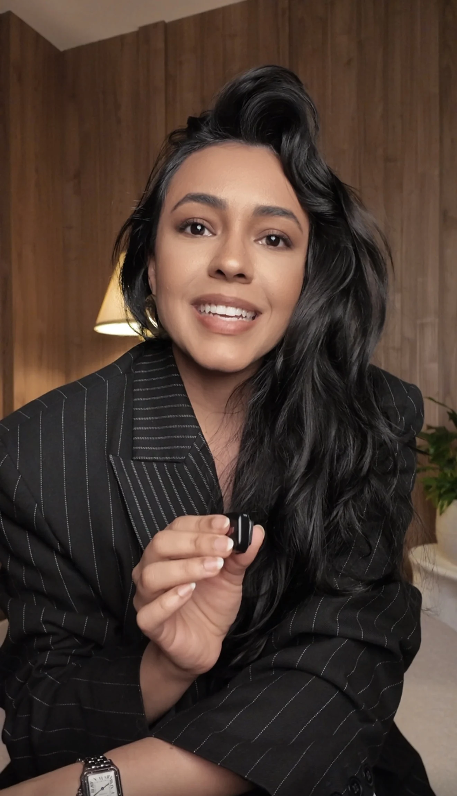

DSMP
Desejo, Sedução, Marca e Posicionamento. O início para sair da comunicação genérica.
Entrar na lista ↗
Marca pessoal, desejo e alto ticket para mulheres que querem parecer caras antes mesmo da oferta.
Aplicar para análise ↗posicionamento, narrativa e desejo em uma direção única.
Clara Do Vale cria marcas pessoais com presença magnética, narrativa proprietária e valor percebido alto.
O trabalho é cirúrgico: remover o ruído, escolher uma posição, construir uma estética e sustentar uma mensagem que faz o mercado entender rápido por que você custa mais.
Posicionamento não é uma bio bonita. É uma decisão pública sobre o lugar que você ocupa, a promessa que sustenta e o tipo de cliente que você permite chegar perto.
Desejo, Sedução, Marca e Posicionamento. O início para sair da comunicação genérica.
Entrar na lista ↗Reposicionamento para mulheres que já têm entrega, mas ainda não parecem tão caras quanto são.
Aplicar agora ↗Experiência premium para escalar reputação, vendas, narrativa e presença de alto ticket.
Solicitar análise ↗Definir o território que você quer dominar e o tipo de cliente que sua marca passa a atrair.

Transformar história, método e visão em uma mensagem reconhecível.
Construir estética, conteúdo e rituais de venda com consistência premium.
A Clara trabalha com mulheres que querem parar de comunicar como commodity e começar a liderar uma percepção de valor.
“Eu não espero a ocasião. Eu crio a ocasião.”
Clara Do ValeNão. Seguidores amplificam uma percepção. O primeiro trabalho é construir uma percepção que mereça ser amplificada.
É para mulheres que querem vender com mais margem, mais autoridade e menos necessidade de provar valor toda hora.
Sim. Marca pessoal é estratégia e aparência pública. As duas coisas precisam contar a mesma história.